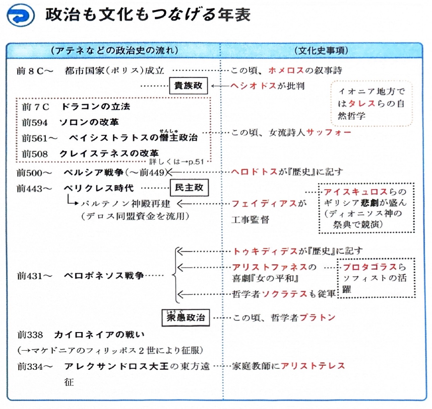
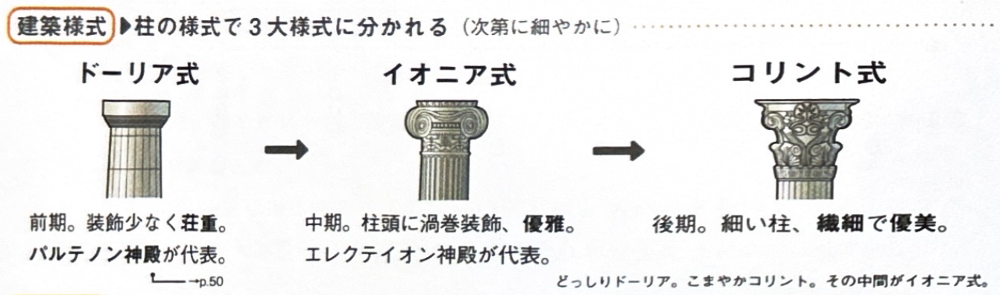
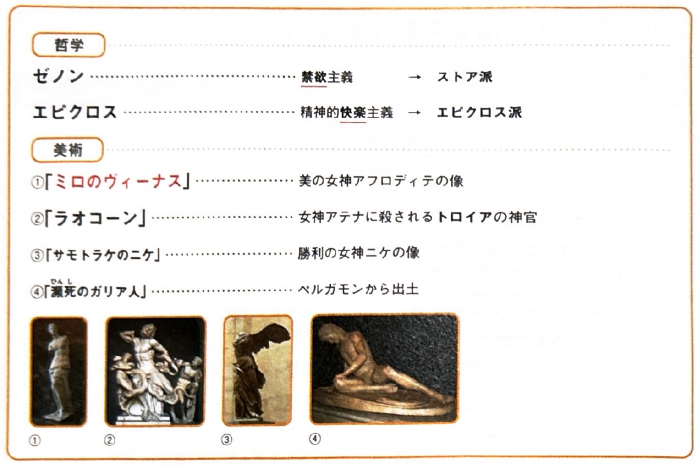

10. 古代地中海世界の文化

テーマ別詳細
-
1. ギリシアの文学・哲学・歴史
ギリシアの文化は、人間を中心とする合理的で調和のとれた文化であった。分野 人物 主な業績・作品など 文学 ホメロス 叙事詩。トロイア戦争の英雄を描いた『イリアス』『オデュッセイア』。 ヘシオドス 叙事詩。『労働と日々』、『神統記』。 演劇 アイスキュロス 悲劇（三大悲劇詩人の一人）。『アガメムノン』。 ソフォクレス 悲劇。『オイディプス王』。 エウリピデス 悲劇。『メデイア』。 アリストファネス 喜劇。『女の平和』（ペロポネソス戦争を風刺）。 イオニア
自然哲学タレス 万物の根源（アルケー）を「水」とした。「哲学の父」。 ピタゴラス 万物の根源を「数」とした。 ヘラクレイトス 万物の根源を「火」とした。「万物は流転する」。 デモクリトス 万物の根源を「原子（アトム）」とした。 ソフィスト プロタゴラス 詭弁を用いる職業教師。「人間は万物の尺度」と唱え、真理の相対性を主張した。 三大哲学者 ソクラテス ソフィストを批判し、客観的真理の存在を肯定。「知徳合一」。民衆裁判で死刑となった。 プラトン ソクラテスの弟子。理想主義のイデア論を提唱。哲人政治を理想とした『国家』を著す。 アリストテレス プラトンの弟子でアレクサンドロス大王の家庭教師。現実主義。「万学の祖」と呼ばれ、『政治学』などを著す。 歴史 ヘロドトス 物語風の歴史書『歴史』を著し、ペルシア戦争を記した。 トゥキディデス 科学的・実証的な歴史書『歴史』を著し、ペロポネソス戦争を記した。 -
2. ギリシアの建築とヘレニズム文化
【ギリシアの建築様式】
柱の装飾により3つの様式に分かれる。
・ドーリア式：前期。装飾が少なく荘重。代表はパルテノン神殿。
・イオニア式：中期。柱頭に渦巻装飾があり優雅。
・コリント式：後期。細い柱で装飾が繊細で華麗。
ギリシア建築の3つの柱の様式
【ヘレニズム文化】
アレクサンドロス大王の遠征により、ギリシア文化とオリエント文化が融合して生まれた。ポリスの枠を超えた世界市民主義（コスモポリタニズム）が特徴。分野 人物・作品 主な業績・特徴など 哲学 ゼノン 禁欲主義を説くストア派を創始した。 エピクロス 精神的快楽主義を説くエピクロス派を創始した。 自然科学
(アレクサンドリアのムセイオンが中心)エウクレイデス
(ユークリッド)平面幾何学を大成した（『幾何学原本』）。 アリスタルコス 太陽中心説（地動説）を説いた。 アルキメデス 浮体の原理やテコの原理を発見した。 エラトステネス 地球の周囲の長さを計測した。 彫刻(美術) 美の女神の像「ミロのヴィーナス」や、トロイアの神官が蛇に絞め殺される姿を表現した「ラオコーン」、「サモトラケのニケ」などの写実的な彫刻が作られた。 
ヘレニズム哲学と代表的な美術作品 -
3. ローマ文化
ギリシア文化を模倣しつつ、土木・建築・法律などの実用的な分野で独自の特徴を発揮した。分野 人物・作品など 主な業績・特徴など 文学 ウェルギリウス ローマ建国神話をうたった叙事詩『アエネイス』。 キケロ 『国家論』などを著した散文家・雄弁家。 歴史 カエサル 『ガリア戦記』（当時のゲルマン人の社会を知る重要史料）。 ポリビオス 共和政時代の歴史を書いた『歴史』。 リウィウス アウグストゥス時代の『ローマ建国史』。 プルタルコス ギリシアとローマの英雄を対比させた『対比列伝』。 タキトゥス ローマ人の贅沢な生活を批判した『ゲルマニア』や『年代記』。 自然科学 プリニウス 百科事典である『博物誌』を著した（火山の噴火で殉職）。 プトレマイオス 『天文学大全』を著し、地球が宇宙の中心であるとする天動説を説いた。 土木・建築・
法・その他土木・建築 円形闘技場であるコロッセウム、万神殿であるパンテオン、軍道であるアッピア街道やガール水道橋など。 ローマ法と暦 市民法から、帝国全土のすべての民族に適用される万民法へと発展した。暦はカエサルがエジプトから導入した太陽暦であるユリウス暦が用いられた。 言語 ラテン語が用いられ、のちのヨーロッパの近代まで国際的な公用語となった。
確認クイズ